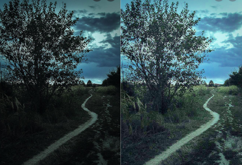

Projects Undertaken at IIT Bombay
Spoken Word Recognition
Course Project for EE679: Speech Processing; a system to identify a spoken word from a set of 10, developed using Hidden Markov Models
Know More ⇨

Image Enhancer GUI
Course Project for EE610: Image Processing; a GUI developed using Tkinter library for loading, editing and saving a custom image.
Know More ⇨